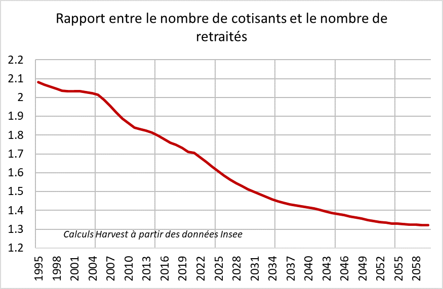
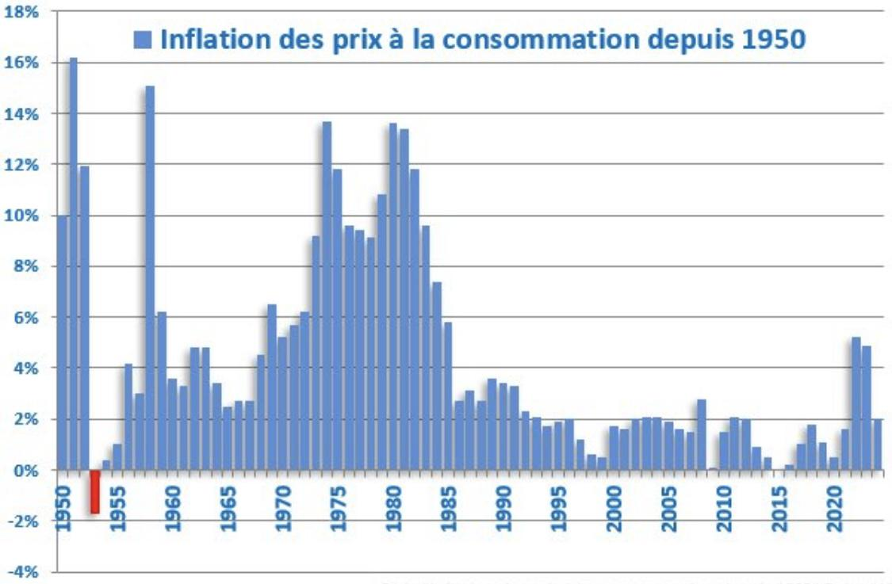
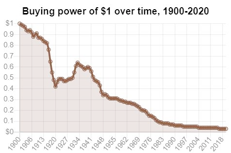
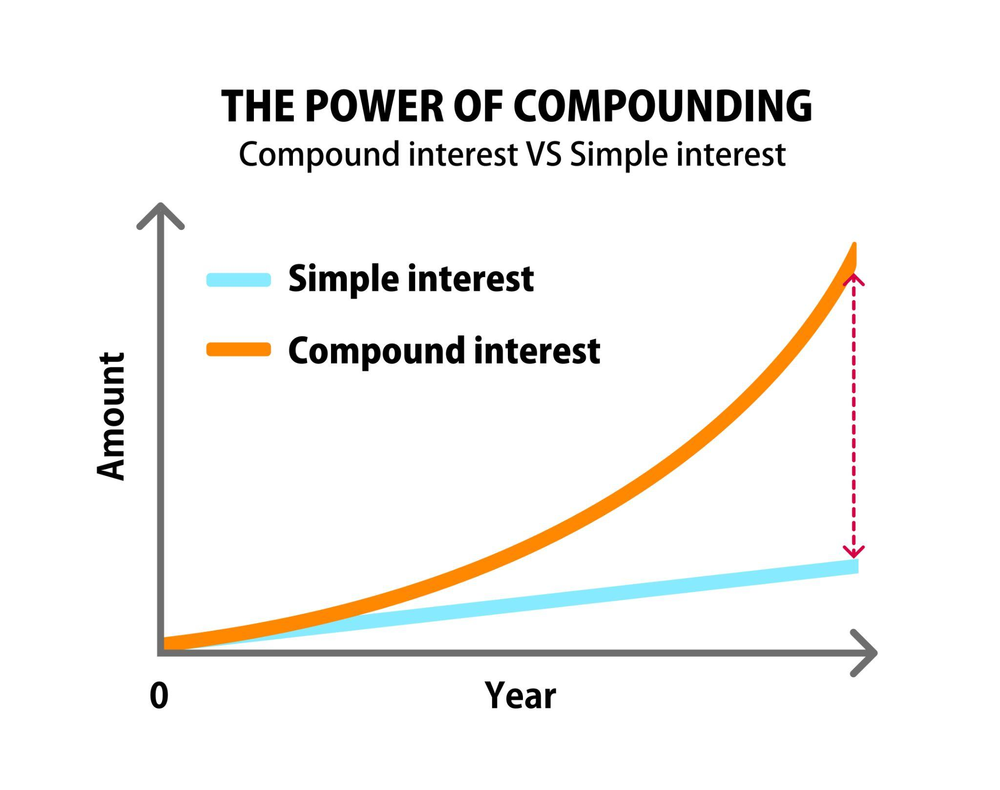

Pourquoi s'embêter à analyser des entreprises et bloquer son argent ? Pourquoi ne pas simplement vivre au jour le jour ? Voici les 5 piliers qui rendent l'investissement indispensable au XXIe siècle.
1. Préparer sa retraite (L'urgence démographique) 👴
C'est le sujet qui fâche, mais les mathématiques sont têtues. Notre système de retraite par répartition repose sur un équilibre simple : les travailleurs d'aujourd'hui paient pour les retraités d'aujourd'hui.
Le problème ? La démographie mondiale change. Nous vivons plus vieux et faisons moins d'enfants. Il y a de moins en moins d'actifs pour financer de plus en plus de retraités. Compter uniquement sur l'État pour assurer vos vieux jours est un pari risqué. Investir, c'est prendre en main sa propre retraite. Nous ne savons même pas nous aurons un jour une retraite par l'état, alors autant prévoir le pire et commencer à construire cette retraite par nous-même !

2. Contrer l'inflation (L'érosion silencieuse) 💸
- Situation ou phénomène caractérisé par une hausse généralisée et continue du niveau des prix.
- Augmentation, accroissement excessif : Inflation de fonctionnaires.
L'inflation est une taxe invisible qui grignote votre épargne chaque seconde. Avec une inflation moyenne de 2% ou 3% par an, 10 000€ laissés sur un compte courant ne vaudront plus que l'équivalent de 6 000€ de pouvoir d'achat dans 20 ans.

Laisser son argent dormir, ce n'est pas la sécurité : c'est la certitude de s'appauvrir lentement. Pour conserver votre pouvoir d'achat, votre argent doit travailler à un taux supérieur à l'inflation. La Bourse, avec ses 8-10% de rendement historique, est le meilleur bouclier contre cette érosion.
Pour bien visualiser ce concept, imaginez votre chariot de courses. Aujourd'hui, avec 100€, vous le remplissez à ras bord. Si l'inflation est de 3% par an, l'année prochaine, pour ces mêmes 100€, vous devrez retirer trois articles du chariot. Dans 10 ans, le chariot sera à moitié vide pour le même prix. Investir sert à compenser cette perte : les gains de vos investissements viennent "payer" l'augmentation du prix des pâtes, de l'essence et de l'électricité, vous permettant de maintenir, voire d'augmenter, votre niveau de vie réel.
L'inflation n'est pas quelque chose de récent ou d'accidentel. Depuis toujours, la valeur de la monnaie (Dollar, Euro, Franc) tend à baisser. Mais pourquoi ?
- La Création Monétaire ("La Planche à Billets") : C'est la cause principale. Lorsque les Banques Centrales (BCE, FED) impriment trop d'argent pour aider les États à payer leurs dettes ou pour stimuler l'économie, il y a plus d'argent en circulation pour la même quantité de biens. La valeur de chaque billet diminue donc mécaniquement. C'est la loi de l'offre et de la demande appliquée à la monnaie.
- L'augmentation des coûts : Si le prix de l'énergie (pétrole, gaz) ou des matières premières augmente, les entreprises répercutent ces coûts sur le prix final des produits que vous achetez.
- La spirale Salaires-Prix : Quand les prix montent, les employés demandent des augmentations de salaire. Pour payer ces salaires, les entreprises augmentent encore leurs prix... créant un cercle vicieux.

🔻 Regardez par vous-même :
Vous pouvez venir voir ici comment l'inflation grignote votre épargne de jour en jour.
Cliquez ici pour tester mon Simulateur d'Inflation3. Faire fructifier son patrimoine (La Boule de Neige) ❄️
Soyons clairs : il n'y a pas de secret. Personne ne devient riche uniquement en économisant une partie de son salaire. L'épargne est une addition (1 + 1 = 2), alors que l'investissement est une multiplication. C'est ce qu'on appelle la magie des intérêts composés.
Albert Einstein 🧠
"Les intérêts composés sont la huitième merveille du monde. Celui qui les comprend s'enrichit, celui qui ne les comprend pas les paie."
Comment cela fonctionne-t-il concrètement ? C'est l'effet "Boule de Neige". Lorsque vous investissez, votre argent produit des "petits" (intérêts ou dividendes). Si vous ne dépensez pas ces gains mais que vous les réinvestissez, ils vont à leur tour produire des intérêts. Vos intérêts génèrent des intérêts !
Prenons un exemple concret avec 10 000€ investis à un taux moyen de 10% par an :
- Année 1 : Vous gagnez 1 000€ (10% de 10 000). Vous avez 11 000€.
- Année 2 : Vous gagnez 10% sur 11 000€, soit 1 100€. Vous avez 12 100€. (Vous avez gagné 100€ de plus que l'année d'avant sans rien faire de plus !)
- Année 10 : Vous ne gagnez plus 1 000€, mais environ 2 350€ d'intérêts juste pour cette année-là.
- Année 30 : Sans jamais avoir rajouté un seul euro de votre poche, vos 10 000€ de départ sont devenus plus de 174 000€.
Sur le long terme, cette courbe devient exponentielle. Investir permet de transformer un petit flux d'épargne mensuel en un capital massif capable de changer la vie de votre famille, simplement en laissant le temps faire son œuvre.
🚀 Passez à l'action :
Vous ne me croyez pas ? J'ai créé un outil pour que vous puissiez visualiser votre propre futur financier.
Cliquez ici pour tester mon Simulateur d'Intérêts ComposésPour que cette magie opère, elle repose sur une équation à trois variables. Si vous maîtrisez ces trois éléments, l'enrichissement devient mathématique :
- 💰 Le Capital (Le Carburant) : C'est votre mise de départ et, surtout, vos versements mensuels (DCA). Plus vous alimentez la machine, plus elle tourne vite.
- 🚀 Le Taux de Rendement (Le Moteur) : C'est la vitesse de votre enrichissement. En Bourse, on vise historiquement 8 à 10% par an. Un livret A à 3% ira beaucoup moins loin qu'un portefeuille d'actions Quality à 12%.
- ⏳ Le Temps (L'Accélérateur) : C'est la variable la plus importante et la plus sous-estimée. Au plus on attend, au plus les gains deviennent délirants. Les intérêts composés ont besoin de temps pour exploser. Les gains des dernières années sont souvent supérieurs à ceux des 20 premières années cumulées ! C'est pour cela qu'il faut commencer le plus tôt possible, même avec de petites sommes.
Le Match : Intérêts Simples vs Intérêts Composés 🥊
Pour bien comprendre la différence, imaginons deux agriculteurs :
- L'Agriculteur "Simple" (Rentier) : Il plante un arbre. Chaque année, l'arbre donne 10 pommes. Il mange les 10 pommes. L'année suivante, il a toujours un seul arbre et 10 pommes. Sa richesse n'augmente jamais, elle est linéaire.
- L'Agriculteur "Composé" (Investisseur) : Il plante un arbre. La première année, il récupère 10 pommes... mais il ne les mange pas. Il plante les pépins. L'année suivante, il a son arbre + des petits arbustes. Quelques années plus tard, il a une forêt entière qui produit des milliers de pommes. Sa richesse est exponentielle.
En investissant, vous faites le choix de ne pas "manger vos pommes" (les dividendes et plus-values) tout de suite, pour les réinvestir et créer votre propre forêt financière.

4. Financer des projets futurs (L'accélérateur de rêves) 🏠✈️
Trop souvent, on voit l'investissement comme une contrainte, une privation. On se dit : "Je me prive aujourd'hui pour être riche quand je serai vieux et fatigué". C'est une vision erronée et triste.
L'argent n'est pas une fin en soi. Avoir un gros chiffre sur un écran n'a aucun intérêt si cela ne change pas votre vie réelle. L'argent est un outil de liberté, et l'investissement est le carburant qui permet d'atteindre vos objectifs de vie non pas dans 40 ans, mais beaucoup plus tôt.
Investir intelligemment vous permet de débloquer quatre niveaux de liberté :
- 🏠 L'Accès à la Propriété (Sans s'étrangler) : Acheter sa résidence principale est le rêve de beaucoup, mais les prix de l'immobilier sont devenus fous. En investissant votre épargne plutôt qu'en la laissant dormir, vous constituez un apport personnel massif beaucoup plus vite.
La différence ? Au lieu d'emprunter sur 25 ans avec des mensualités étouffantes, vous arrivez devant le banquier avec un apport solide (issu de vos gains boursiers), ce qui vous permet de négocier un meilleur taux, d'emprunter moins, ou d'acheter plus grand. L'investissement est un tremplin vers la pierre. - 🌍 Voyager et Vivre des Expériences : On n'emporte pas son argent dans la tombe. Investir, c'est aussi se créer un "budget plaisirs" infini. Une fois votre portefeuille bien établi, vous pouvez choisir d'utiliser une partie des dividendes (la rente) pour payer vos vacances, un beau voyage au Japon, ou cette voiture qui vous fait rêver.
La magie ici, c'est que vous payez vos luxes avec les bénéfices de votre argent, sans jamais toucher à votre capital de départ. C'est la définition de la richesse saine. - ❤️ Faire ce qu'on aime (Le "F*ck You Money") : C'est le pouvoir le plus sous-estimé. Avoir un portefeuille d'investissement solide vous donne une sécurité mentale incroyable. Si votre patron devient toxique, si votre entreprise perd ses valeurs, ou si vous voulez simplement changer de vie pour lancer votre propre projet (entrepreneuriat, artisanat, art), vous pouvez le faire.
L'investissement achète votre tranquillité d'esprit. Il vous permet de travailler par choix et par passion, et non plus par peur de ne pas pouvoir payer le loyer à la fin du mois. - 🎓 Assurer l'avenir des proches : Financer les études supérieures des enfants sans qu'ils aient à s'endetter, aider un proche en difficulté, ou simplement transmettre un patrimoine qui mettra votre famille à l'abri pour plusieurs générations.
En clair, n'investissez pas pour devenir le plus riche du cimetière. Investissez pour devenir le maître de votre temps et de vos choix le plus rapidement possible.
5. Bénéficier de l'innovation et de la croissance mondiale (Surfer sur le progrès) 🌎
Au-delà de votre propre enrichissement, investir est un pari fondamentalement optimiste sur l'avenir de l'humanité. C'est le moyen le plus direct de s'associer à la réussite collective.
Regardez autour de vous. Le monde change à une vitesse fulgurante. Chaque décennie apporte son lot de révolutions qui améliorent notre quotidien :
- La Technologie : Internet, le Smartphone, et maintenant l'Intelligence Artificielle qui redéfinit le travail.
- La Santé : Des traitements révolutionnaires contre le cancer, l'allongement de l'espérance de vie.
- Le Mode de Vie : La démocratisation du voyage, l'accès à l'information instantanée, le confort moderne.
Qui est à l'origine de ces progrès ? Ce sont des entreprises. Ce sont des ingénieurs chez Microsoft, des chercheurs chez Novo Nordisk, des logisticiens chez Amazon. Ces entreprises créent de la valeur en résolvant les problèmes de l'humanité.
Morgan Housel 📖
"L'optimisme est le meilleur pari, car le monde tend à s'améliorer pour la plupart des gens, la plupart du temps."
Investir, c'est simplement parier sur cette amélioration continue.
En investissant, vous arrêtez d'être un simple spectateur (ou consommateur) de ces changements pour en devenir un acteur et bénéficiaire. Vous capturez une partie de la valeur créée par l'ingéniosité humaine mondiale.
Tant que l'être humain voudra vivre mieux, se soigner plus vite, communiquer plus facilement et consommer des produits de qualité, l'économie mondiale croîtra. Il y aura des crises, des guerres et des récessions (c'est inévitable), mais la tendance de fond sur les 200 dernières années est indiscutable : le monde avance. Investir, c'est placer son argent dans le sens de l'histoire.
🔑 Ce qu'il faut retenir
L'investissement est une nécessité vitale pour contrer l'inflation et pallier les incertitudes du système de retraite. Grâce à la puissance exponentielle des intérêts composés, investir tôt vous permet de transformer votre épargne en un outil de liberté puissant, capable de financer vos rêves et de vous offrir le choix de vie que vous méritez.